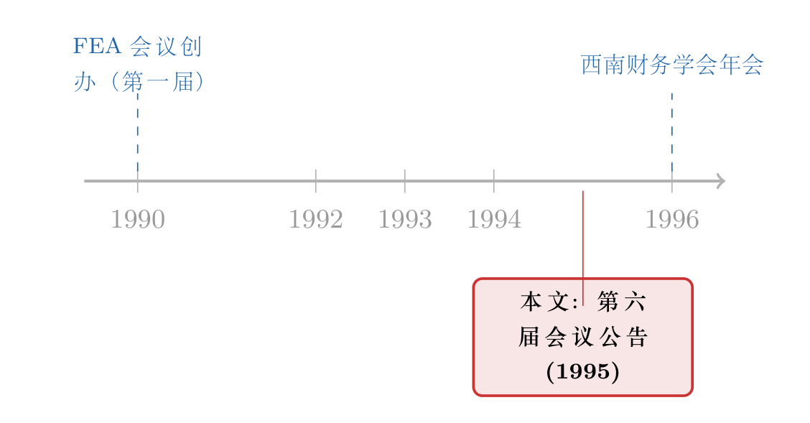

一张 1995 年的会议海报，藏着一门学科的「操作系统」
本文读的是 JFE (1995, Vol. 39) 的一则会议公告（Announcement）：它不是论文，没有数据、没有模型、没有结论，只是马里兰大学第六届「财务经济学与会计学会议」的征文海报，外加一则西南财务学会的开会通知。可正因为它什么都没说，它反而把一件平时被我们忽略的事说透了——一篇顶刊论文从写出来到被人读到，背后靠的是一整套看不见的「基础设施」，而这张海报，就是这套基础设施露出水面的一角。
1 一篇「没有内容」的内容
先说一件略显荒诞的事。
我手里这篇东西，挂在 1995 年《金融经济学杂志》(Journal of Financial Economics, JFE) 第 39 卷里，标题就两个字：ANNOUNCEMENT。它通篇没有一个回归系数，没有一张表，没有一个假设检验，甚至连一句可以被证伪的话都没有。它只是告诉你：1995 年 11 月 10 日和 11 日，马里兰大学要开第六届「财务经济学与会计学会议」(Conference on Financial Economics and Accounting)；主旨演讲人是耶鲁大学的 Stephen A. Ross，演讲题目「稍后公布」；想投稿的，请把稿子寄给 Lemma Senbet 教授（金融方向）或 Larry Gordon 教授（会计方向）。海报末尾还顺手贴了另一则通知：西南财务学会 1996 年 3 月在圣安东尼奥开年会，投稿截止日 1995 年 9 月 1 日。
就这些。
按我们读论文的标准流程——研究问题是什么、识别策略是什么、数据是什么、主要结果是什么——这篇东西一条都答不上来。它根本不是为了「被读懂」而存在的。它是为了「被照做」而存在的：看到它的人，该投稿的去投稿，该订机票的去订机票。
那么，一个自然的问题是：这样一张连「内容」都谈不上的纸，为什么值得我们停下来看一眼？
因为它恰恰暴露了那个平时被论文的光环遮住的东西——学术知识不是凭空长出来的，它是被一套制度「生产」出来的。而这套制度，平时藏在每篇论文的致谢、脚注、参考文献的缝隙里，难得有这么一次，它自己走到了台前。
2 把论文拆开，你会看见一条流水线
我们读一篇 JFE 论文时，看到的是成品：一个干净的因果故事，几张漂亮的表，一段谦逊的结论。但成品的背后，是一条很长的流水线。
这张海报，刚好把流水线最关键的两道工序摆在了你面前。
第一道工序：会议。 论文在变成论文之前，先是一份「工作论文」(working paper)。它要先在某个会议上被宣读、被一屋子同行当场挑刺，才有资格往期刊投。海报里那串长长的名单——纽约大学的 Joshua Ronen 和 Martin Gruber，罗格斯大学的 Cheng-few Lee 和 Bikki Jaggi，华盛顿大学的 Nick Dopuch 和 Philip Dybvig，杜克的 Edwin Burmeister，伯克利的 Baruch Lev……——不是凑数的嘉宾，他们是这道工序上的「质检员」。一篇论文能不能活下来，往往就取决于在这样一间屋子里，它的识别策略经不经得起追问。
这里有个细节值得玩味：会议把「金融」(Senbet 负责) 和「会计」(Gordon 负责) 放在同一个屋檐下。今天我们习惯把这两门学科分得很开，但在 1995 年，它们共享着同一批「质检员」、同一套语言。一门学科的边界，常常就是这样在一次次会议的分工里被慢慢画出来的。
第二道工序：投稿与评审。 海报上那句不起眼的话——「Manuscripts may be submitted for consideration」——背后是整个学术出版的命门。你把稿子寄出去，它要经过匿名评审，经过主编的裁断，才可能变成期刊上的一页。这道工序，是免费的、靠声誉运转的、且高度依赖个人信任的。（关于学术界这套「靠声誉免费运转」的隐形账本，可参见《一页致谢里的「隐形账本」：金融学界靠什么免费运转》和《撑起一本顶刊的，是三百个不收钱的人》。）
换句话说，这张海报不是知识本身，它是知识的「操作系统」。论文是跑在这个系统上的应用程序，而我们平时只盯着应用程序看，几乎从不去想：是谁在维护这个系统？
3 主旨演讲人那一栏，藏着一条暗线
读到这里，你可能觉得这不过是一篇关于「学术八卦」的文章。但真正关键的一步在于——你去看主旨演讲人那一栏。
KEY-NOTE SPEAKER: Stephen A. Ross, Yale University. Topic: To be announced at a later date.
题目还没定，人先定了。这本身就说明：在 1995 年的财务经济学江湖里，请到 Ross 这个名字，比他要讲什么更重要。
为什么？因为 Ross 几乎以一己之力，给这门学科提供了好几块「地基」。套利定价理论 (arbitrage pricing theory, APT)、风险中性定价的代理人模型、以及后来那个充满争议的「复原定理」(recovery theorem)——这些都是后世无数论文反复站上去施工的地基。一场会议把他请来做主旨演讲，等于在向所有与会者宣告：我们今天要讨论的一切，都建立在这样一批人打下的地基之上。
于是反转出现了：这张「没有内容」的海报，其实悄悄记录了一门学科的权力结构。谁是质检员，谁是地基提供者，谁负责把守投稿的闸门——它一个名字都没漏。我们读论文时看不到这张权力图谱，但每一篇论文都跑在这张图谱之上。
顺带一提，Ross 的「复原定理」——试图从期权价格里反推出市场对未来的真实概率——在二十多年后被人拿去做了严格的实证审判，结论并不乐观。这条暗线，可参见《把概率从期权价格里「凭空」捞出来——Ross 复原定理的一次实证审判》。一个名字在 1995 年是会议海报上的「招牌」，在 2016 年成了被检验的「假设」——这本身就是学术生命周期的缩影。
4 文献脉络：当「论文」不再是知识的唯一形态
读这类「非论文」的东西，最有意思的地方在于：它逼着我们重新想一个问题——一本顶刊里，到底有多少东西不是论文？
如果你翻一翻 JFE 这些年的卷册，会发现夹在正经论文之间的，有大量这样的「边角料」：会议公告、征文启事、编委名单、致谢、勘误、主编寄语、卷末索引，甚至还有出版商的广告。它们从不被引用，从不进数据库的「被引次数」统计，却年复一年地占着顶刊的版面。
这些「边角料」连起来，恰恰勾勒出学术共同体自我运转的轨迹。

把它放进这条脉络里看：这则 1995 年的会议公告，是这门学科「操作系统」的一次例行刷新。它前面，有维持评审运转的《acknowledgments》所记录的那三百个不收钱的人；它后面，有划定研究疆界的各种《征稿启事》、有记录学科版图的《编委名单》、有处理优先权纠纷的《编者按》、乃至给每篇文章发「身份证」(DOI) 的《出版商通告》。
它们都不是知识，但没有它们，知识就无处安放。这是一个容易被忽视、却极其朴素的事实：学科的连续性，不只靠论文，更靠这些维护「操作系统」的无名文本。 一则会议海报，就是这条连续性上的一个时间戳。
5 评论与延伸（Q&A + 研究方向）
(a) 几个可能的疑问
Q：把一则会议海报当「论文」来评述，是不是过度解读了？
老实说，确实有过度解读的成分——这篇东西的原始功能就是通知，不是表达。但「评述」在这里换了个对象：我评的不是它的内容（它没有内容），而是它作为一份「制度文物」所携带的信息。一张海报里出现了哪些名字、谁负责金融、谁负责会计、谁是招牌，这些都是关于学科结构的真实数据。读它，更像读一份考古层位，而非读一篇论证。
Q：这跟读一篇有数据有模型的实证论文，到底有什么不同？
最根本的不同是：实证论文试图回答「世界是怎样的」，而这类文本记录的是「我们这群人是怎样组织起来回答问题的」。前者是知识，后者是元知识 (meta-knowledge)。一门成熟的学科，两者都需要。我们平时严重偏食前者，所以偶尔回头看一眼后者，反而能校准我们对「知识是如何生产的」这件事的理解。
Q：为什么主旨演讲人题目「稍后公布」，却已经印上了名字？
因为在会议这种场合，名字本身就是「内容」。请到 Ross，传递的信号是「本次会议的学术规格」；至于他具体讲什么，对绝大多数与会者的「来不来」决策影响很小。这其实是一个很标准的信号 (signaling) 现象：在信息不对称下，一个足够可信的名字，能替代尚未实现的内容承诺。
Q：会议把金融和会计放一起，今天看是不是很「过时」？
不该用「过时」来评价。1995 年这两门学科共享方法论（都大量用资本市场数据、事件研究、估值模型），放一起开会是顺理成章的。后来它们分家，主要是各自的问题域和数据越做越专。但有意思的是，这几年「会计信息如何进入价格」「披露如何影响流动性」这类题目又把两边重新拉近了——边界从来不是一刀切死的。
Q：这类「非论文」文本，会不会污染我们对一本期刊的计量评价？
会，而且是个被低估的测量问题。如果你用文本挖掘去统计 JFE「在研究什么」，这些公告、广告、索引就是噪声，会把词频带偏（比如本文里高频出现的
University、Finance、Professor根本不是研究主题）。做这类大规模文献计量时，先把「非论文条目」清洗掉，是一道必要却常被跳过的工序。
Q：今天还有必要在纸质期刊里登会议海报吗？
几乎没有了。这正是这张海报的「文物价值」所在：它定格了一个「分发靠纸、传播靠邮寄、截止日要提前两个月」的年代。今天会议征文靠邮件列表、社交媒体和专门的投稿系统，分发成本趋近于零。一则当年必须占用顶刊一页版面的通知，如今连一条推送都算不上——传播技术的变迁，把这类文本彻底挤出了期刊。
(b) 几个可能的研究问题与提案
1. 顶刊里的「非论文版面」都去哪了？
【经济故事】把 1970–2010 年间几本顶刊（JFE、JF、RFS）里所有「非论文条目」——公告、广告、征稿、致谢、索引——逐年编码，画出它们占总版面的比例曲线。这条曲线大概率会在 2000 年前后随互联网普及而断崖式下跌。它能量化一件我们只有模糊印象的事：学术传播的数字化，是从哪一年、以多快的速度，把「纸质基础设施」清出期刊的。 【可行性】高。数据就是期刊的全文 PDF，按页编码即可，是个干净的描述性工作；难点只在人工编码量大，但可以用版面元数据 + 简单分类器半自动化。
2. 会议「质检员」名单，能不能预测论文的命运？
【经济故事】会议程序委员会的名单是公开的。把某一年会议上宣读的工作论文，按「程序委员会里有没有该领域的大牛」分组，追踪它们最终发表的期刊层级、被引数。如果「质检越严的会议」筛出的论文后续表现越好，就为「会议作为同行评审前置工序」的价值提供了直接证据。 【可行性】中。会议程序、工作论文版本可从 SSRN、会议存档拼出来，发表去向可追踪；主要难点是「质检强度」难以干净度量，存在会议声誉与论文质量互为因果的内生性，需要用委员会成员的外生变动（如轮换）来做识别。
3. 「招牌演讲人」对一场会议的真实影响有多大？
【经济故事】用各财务学年会的主旨演讲人作为「招牌」，看请到一位顶级学者，是否带来更多投稿、更高的参会人数、乃至会后更密集的合作网络。机制是信号：一个可信的名字降低了与会者对「会议质量」的不确定性。 【可行性】中。投稿/参会数据需要向学会申请，可得性不确定；识别上可考虑「原定演讲人临时取消」这类自然实验，把「名字」的因果效应从「会议本身越办越好」中剥离出来。
4. 把「致谢网络」做成一张学科地图。
【经济故事】论文致谢里感谢的人、感谢的会议，构成一张隐形的社会网络。把几十年的致谢文本抽取出来，能重建出谁在给谁「免费质检」、哪些会议是关键节点。它能把本文谈的「操作系统」从隐喻变成一张可测量的图。 【可行性】高。致谢文本就在论文首页脚注里，命名实体识别 + 网络分析是成熟工具；这类「无名劳动」的网络结构本身就极少被量化，是个有新意又 doable 的方向。
评述者的判断
把话说回来：这是一篇没有研究内容的会议公告，谈不上什么「学术贡献」，硬要给它打分是不公平的。它的全部价值，在于它是一份意外保存下来的制度切片——让我们得以隔着三十年，看清一门学科在数字化之前是如何组织自己的。
要说「识别」上的担忧，那就是：我对它的全部解读，都是一种事后的、单点的「读图」，没有任何可证伪的成分。我说「请到 Ross 是一种信号」、说「会议是评审的前置工序」，这些都是合理的猜测，而非被检验过的论断。这恰恰是上面那几个研究提案存在的理由——把这种「读海报读出来的直觉」，变成可以用数据检验的命题。
后续我最想看到的，是有人真的去做上面第 1 个题目：把顶刊里那些从不被引用、却年复一年占着版面的「边角料」系统地编码一遍，画出它们消亡的曲线。我们花了无数精力研究论文「说了什么」，却几乎从没认真量过：承载这些论文的那套基础设施，本身是怎样随技术变迁而生、而盛、而退场的。 一张 1995 年的海报，值得我们记住的，不是它通知了一场会议，而是它提醒了我们：知识的生产，从来不只是写论文那一件事。
参考文献
- Announcement: Sixth Annual Conference on Financial Economics and Accounting. (1995). Journal of Financial Economics 39.
- Announcement: Southwestern Finance Association Meeting. (1995). Journal of Financial Economics 39.